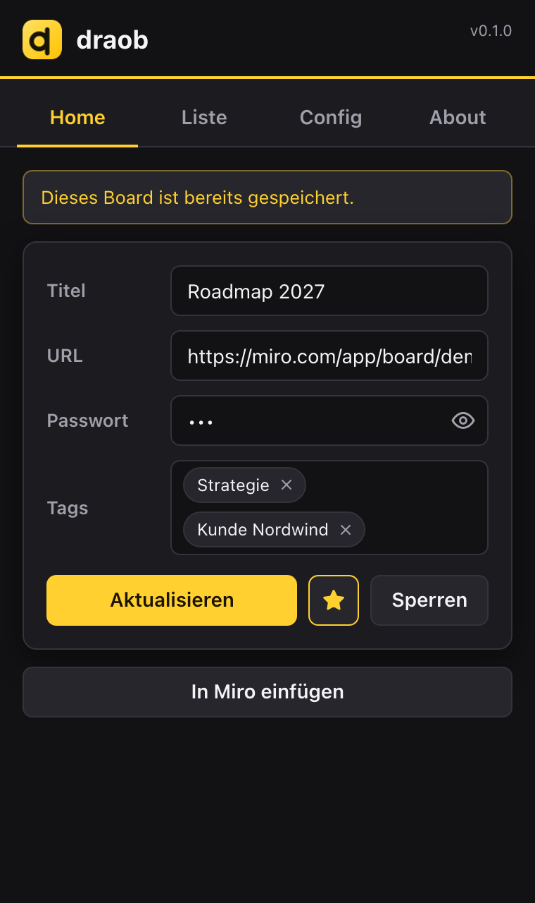
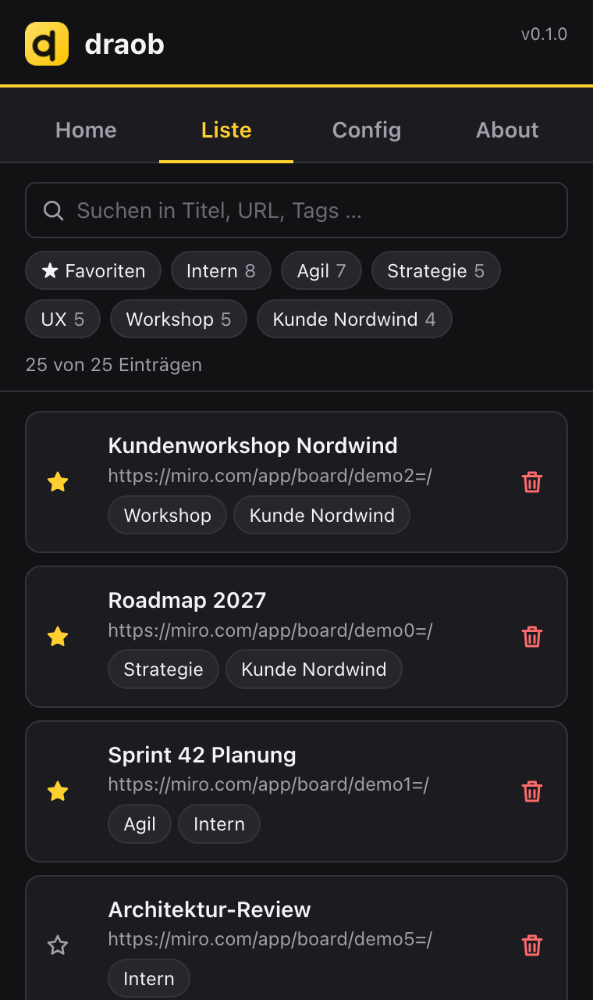
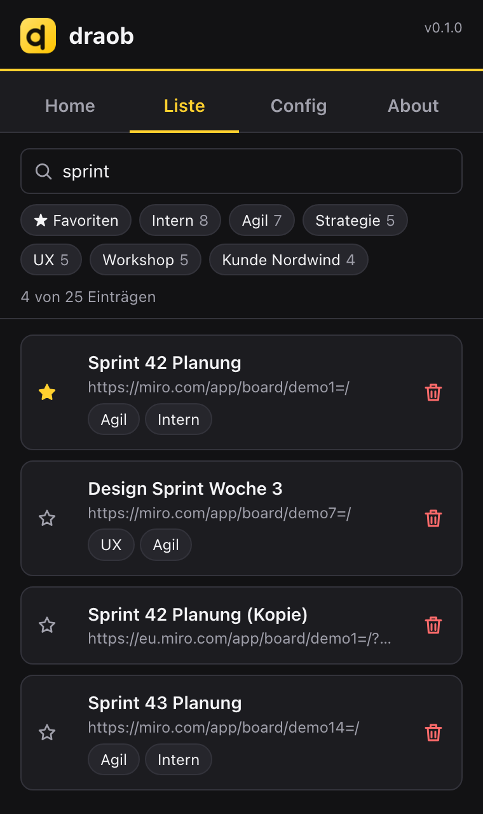

Schluss mit „Wie war nochmal das Passwort für dieses Board?“ draob ist eine Chrome-Extension, die die Passwörter deiner Miro-Boards verschlüsselt speichert, das richtige Board beim Öffnen erkennt und das Passwort mit einem Klick einfügt. Alles bleibt lokal in deinem Browser: keine Konten, kein Server, kein Tracking. Unabhängiges Projekt, nicht mit Miro verbunden.

Board erkannt: ein Klick fügt das Passwort ein

Liste mit Favoriten, Tags und Link-Symbol

Suche findet Titel, URL und Tags sofort
Das kann draob
Erkennt dein Board: URL und Titel werden übernommen
Passwort mit einem Klick: „In Miro einfügen“, Absenden tust du selbst
Suche, Tags, Favoriten, Link-Symbol öffnet die gespeicherte Seite
Sicherung: verschlüsselten Tresor als Datei speichern und wiederherstellen
Installieren (ca. 2 Minuten, Chrome am Computer)
draob ist noch nicht im Chrome Web Store und wird als „entpackte Erweiterung“ geladen.
ZIP laden:github.com/engelrico/draob/releases/latest öffnen und draob-<Version>.zip herunterladen.
Entpacken (Doppelklick). Der Ordner muss dauerhaft liegen bleiben, z. B. in „Dokumente“.
In Chrome chrome://extensions öffnen, oben rechts Entwicklermodus einschalten.
Entpackte Erweiterung laden klicken, den entpackten Ordner wählen (der mit manifest.json).
Optional: über das Puzzle-Symbol draob anheften.
Benutzen
draob-Icon klicken, beim ersten Mal ein Masterpasswort festlegen (mind. 8 Zeichen).
Miro-Board öffnen, draob-Icon klicken: Titel und URL sind ausgefüllt, Board-Passwort eintragen, speichern.
Nächstes Mal: In Miro einfügen klicken, in Miro bestätigen.
Wichtig: Vergisst du das Masterpasswort, sind die Daten weg (Absicht, keine Wiederherstellung). draob ist ein früher Prototyp ohne unabhängige Sicherheitsprüfung, für Hochsicherheits-Zugangsdaten nimm einen etablierten Passwortmanager. Chrome zeigt bei Erweiterungen im Entwicklermodus gelegentlich einen Hinweis, den du schließen kannst.
Update und Feedback
Update: unter Config eine Sicherung exportieren, neue ZIP in denselben Ordner entpacken, in chrome://extensions bei draob auf Neu laden klicken. Die Einträge bleiben erhalten (ab v0.1.2; bei Version bis v0.1.1 ändert sich die ID einmalig, dann Sicherung wiederherstellen).
Feedback: im About-Tab von draob (GitHub oder E-Mail) oder an draob@engelrico.de. Bitte keine Passwörter oder Board-Links mitschicken.
Details: github.com/engelrico/draob · Stand v0.1.2